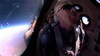

L'ESPACE DEVIENT LE LIEU DE TOUS LES EXPLOITS
Après des années de faux départs et d'accidents, les milliardaires Richard branson(Virgin Galactic) et Jeff bezos (Blue Origin) se sont offert cet été quelques minutes d'apesanteur à la frontière de l'espace. Coup d'envoi, selon eux, d'un tourisme spatial de masse.
